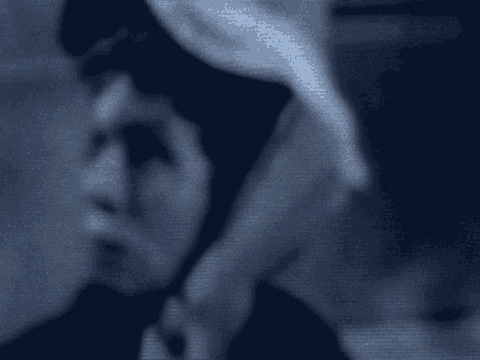
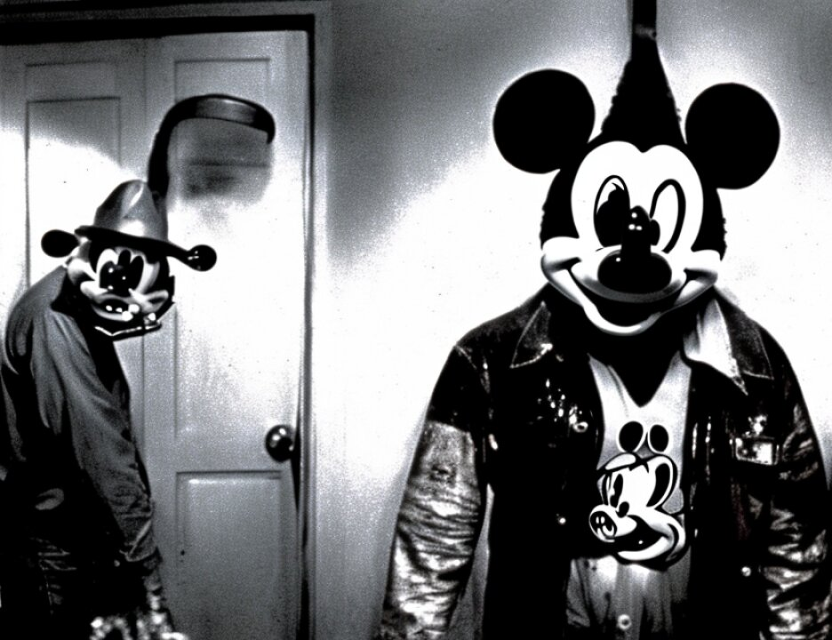

22 THE COURT: But no live testimony?
23 MR. SCHMIDT: No additional live witnesses, that is
24 correct.
25 THE COURT: Very well. Mr. Cohn.
5137
1 MR. COHN: Thank you, your Honor. Your Honor, I have
2 one, just one stipulation. It is hereby stipulated and agreed
3 by and between defendant Al-'Owhali, by and with the consent
4 of his attorney and the United States of America by Mary Jo
5 White, United States Attorney for the Southern District of New
6 York, Patrick Fitzgerald, Kenneth M. Karas, Paul W. Butler and
7 Michael J. Garcia, of counsel, that:
8 1. Government's Exhibit 562 -- may we have that,
9 flip the switch for us, please? Thank you -- that
10 Government's Exhibit 562 is the newspaper photograph which the
11 witness Charles Mwaka Mula stated in August 1998 that he
12 recognized as depicting the person that he saw emerge from the
13 passenger side of the truck and begin throwing items the day
14 of the embassy bombings.
15 Further, it is stipulated that Government's Exhibit
16 563 is the composite sketch prepared by an FBI agent based on
17 the description provided by the witness Charles Mwaka Mula on
18 August 11, 1998, of the individual he observed exiting the
19 truck and throwing items on the day of the bombing.
20 It is further stipulated and agreed that Government's
21 Exhibits 562 and 560 may be received in evidence at trial --
22 and, your Honor, I believe they already are in evidence.
23 It is further stipulated and agreed that this
24 stipulation may be received as evidence at trial, and this
25 stipulation is marked Al-'Owhali L.
5138
1 THE COURT: Received.
2 (Defense Exhibit Al-'Owhali L received in evidence)
3 MR. COHN: Thank you, your Honor. Defense rests.
4 THE COURT: Defense rests.
5 MR. RUHNKE: Your Honor, on behalf of Khalfan Khamis
6 Mohamed, we rest on the present state of the record.
7 THE COURT: As you have heard, ladies and gentlemen,
8 all the defendants have rested. We will take a recess now
9 until 1:30. I hope your lunch -- make it 2:00. We will take
10 a recess until 2:00.
11 (Jury excused)
12 THE COURT: If there is no objection, it is my
13 present intent to allocute defendants Al-'Owhali, K.K.
14 Mohammed and El Hage concerning their decision not to plead.
15 MR. RUHNKE: No objection.
16 MR. COHN: No objection.
17 THE COURT: Mr. Kenneally, will you place under oath
18 or have those defendants affirm. They may remain seated.
19 Place them all under oath. Mr. El Hage is fluent in English.
20 (Defendant Wadih El Hage sworn)
21 THE COURT: Now Mr. Al-'Owhali.
22 (Defendant Mohamed Al-'Owhali sworn)
23 THE COURT: Mr. Mohamed.
24 (Defendant Khalfan Khamis Mohamed sworn)
25 THE COURT: The purpose of this proceeding is for it
5139
1 to be clear that you understand that under our system of
2 criminal justice the defendant has the right, if he wishes, to
3 take the stand and to testify. If he takes the stand and
4 testifies, he is treated as any other witness, that is, he is
5 subject to cross-examination, and he cannot pick and choose
6 what questions he does or does not answer on
7 cross-examination.
8 The defendant also has the right not to testify, and
9 the jury is instructed that the defendant has a constitutional
10 right not to testify and that no consideration may be given or
11 adverse inference drawn by virtue of a defendant exercising
12 his constitutional right not to testify.
13 The decision whether or not to testify is a decision
14 to be made by the defendant. Although the defendant may
15 receive advice from counsel concerning whether or not it is in
16 his best interests to testify or not to testify, the ultimate
17 decision whether or not to testify is one made by the
18 defendant.
19 Mr. El Hage, do you understand what I have just
20 stated?
21 DEFENDANT EL HAGE: Yes, I do.
22 THE COURT: Understanding what I have just stated, is
1